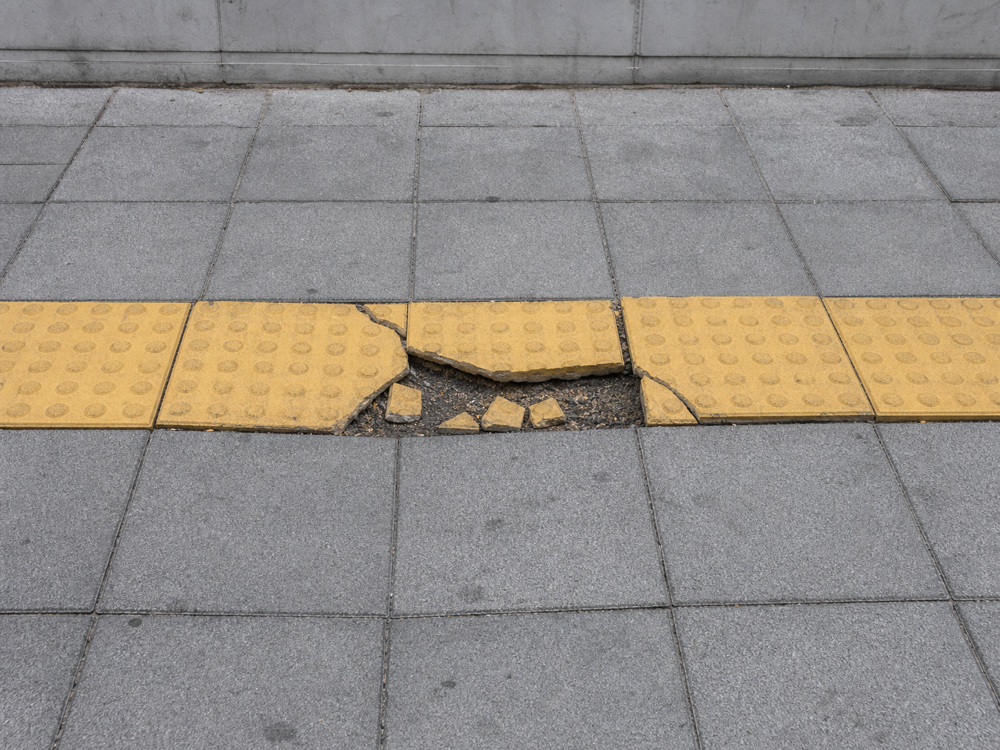
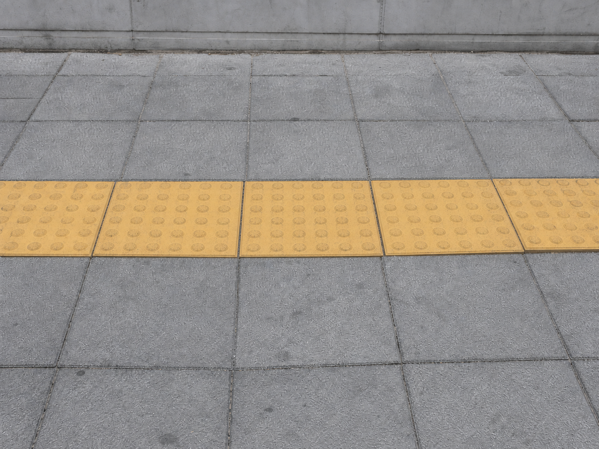

관리주체·처리경로 규칙 기반 후보 위치 시설유형 관리대장 업무규칙 관리주체 후보구청 관리 가능성 처리경로 후보직접 조치 생성형 AI: 확정된 정보로 조치요청문 초안만 작성 담당자가 처리경로 확정
동일지점 조치 전후검증 이미지 정합 예시담당자 확인 전 조치 전  파손·침하 영역 후보보수 필요 예시 조치 후  복구영역 변화 후보보수 완료 예시 같은 지점·유사 구도 후보 · 최종 종결은 담당자 승인 완료 재조치 타기관 확인